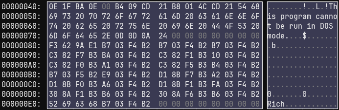
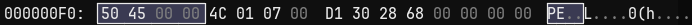

PE文件 --- DOS头 --- e_magic，DOS签名，必须为MZ
PE头 --- e_lfanew，NT头偏移
--- ......
--- DOS存根
--- NT头 ---
签名结构体，PE文件格式核心标识"PE\0\0"
--- 文件头 --- Machine编码
--- NumberOfSections，文件节区数量
--- SizeOfOptionalHeader，特定架构下的可选头长度
--- Characteristics，标识文件属性
--- TimeDateStamp，纪录编译创建时间
--- ......
--- 可选头 --- magic
--- AdressOfEntryPoint，指出程序最先执行的代码起始地址
--- ImageBase，指出文件优先装载地址
--- SectionAlignment，节区内存中的最小单位
--- FileAlignment，节区在磁盘中的最小单位
--- SizeOfImage，指定PEImage在虚拟内存中所占的空间大小
--- SubSystem，区分系统驱动文件和普通可执行文件
--- NumberOfRvaAndSize，指定DataDirectory数组个数
--- DataDirectory数组
--- ......
--- 节区头 --- VirtualSize，内存中节区大小
--- VirtualAddress，内存节区起始地址，由可选头SectionAlignment确定
--- SizeOfRawData，磁盘中节区所占大小
--- PointerToRawData，磁盘节区起始地址，由FileAlignment确定
--- Characteristics，节区属性
--- ......
（code、data、resource存在不同节区，节区头就由上面的结构体组成数组，每个结构体对应一个区）
共8*8=64字节。
typedef struct _IMAGE_DOS_HEADER {
WORD e_magic; // DOS签名 "MZ" (0x5A4D)，重要
WORD e_cblp; // 字节数（最后页）
WORD e_cp; // 页数
WORD e_crlc; // 重定位项数
WORD e_cparhdr; // 头部段数
WORD e_minalloc; // 最小内存分配
WORD e_maxalloc; // 最大内存分配
WORD e_ss; // 初始SS值
WORD e_sp; // 初始SP值
WORD e_csum; // 校验和
WORD e_ip; // 初始IP值
WORD e_cs; // 初始CS值
WORD e_lfarlc; // 重定位表偏移
WORD e_ovno; // 覆盖号
WORD e_res[4]; // 保留字段
WORD e_oemid; // OEM标识符
WORD e_oeminfo; // OEM信息
WORD e_res2[10]; // 保留字段
LONG e_lfanew; // NT头偏移（PE文件起始位置），重要
} IMAGE_DOS_HEADER, *PIMAGE_DOS_HEADER;图 1 DOS头
在DOS系统下提示一句话，包含数据和代码，可以修改，但是修改不可覆盖DOS头和NT头，长度不能随意修改，如果缩短或增长需要修改地址，会很麻烦。
图 2 DOS存根
没什么说的。
typedef struct _IMAGE_NT_HEADERS {
DWORD Signature; // PE签名 "PE\0\0" (0x00004550)
IMAGE_FILE_HEADER FileHeader; // 文件头
IMAGE_OPTIONAL_HEADER OptionalHeader; // 可选头（32/64位）
} IMAGE_NT_HEADERS32, *PIMAGE_NT_HEADERS32;
// 64位版本（IMAGE_OPTIONAL_HEADER64）
typedef struct _IMAGE_NT_HEADERS64 {
DWORD Signature;
IMAGE_FILE_HEADER FileHeader;
IMAGE_OPTIONAL_HEADER64 OptionalHeader;
} IMAGE_NT_HEADERS64, *PIMAGE_NT_HEADERS64;PE文件核心标识，内容"PE\0\0"。
图 3 签名
固定20字节。
typedef struct _IMAGE_FILE_HEADER {
WORD Machine; // 目标CPU架构（如0x014C=Intel 386）
WORD NumberOfSections; // 节区数量
DWORD TimeDateStamp; // 编译时间戳
DWORD PointerToSymbolTable; // 符号表偏移（调试用）
DWORD NumberOfSymbols; // 符号数量
WORD SizeOfOptionalHeader; // 可选头大小
WORD Characteristics; // 文件属性（如可执行/DLL）
} IMAGE_FILE_HEADER, *PIMAGE_FILE_HEADER;其中Characteristics按bit位定义，每一位含义如下：
| Bit | 名称 | 值 | 说明 |
|---|---|---|---|
| Bit0 | IMAGE_FILE_RELOCS_STRIPPED | 0x0001 | 重定位信息已移除（通常是 EXE） |
| Bit1 | IMAGE_FILE_EXECUTABLE_IMAGE | 0x0002 | 文件是可执行的 |
| Bit2 | IMAGE_FILE_LINE_NUMS_STRIPPED | 0x0004 | 行号信息已移除（已废弃） |
| Bit3 | IMAGE_FILE_LOCAL_SYMS_STRIPPED | 0x0008 | 符号表已移除（已废弃） |
| Bit4 | IMAGE_FILE_AGGRESIVE_WS_TRIM | 0x0010 | 优化工作集（已废弃） |
| Bit5 | IMAGE_FILE_LARGE_ADDRESS_AWARE | 0x0020 | 支持 >2GB 地址空间 |
| Bit7 | IMAGE_FILE_BYTES_REVERSED_LO | 0x0080 | 小端字节序（已废弃） |
| Bit8 | IMAGE_FILE_32BIT_MACHINE | 0x0100 | 32 位架构（x86） |
| Bit9 | IMAGE_FILE_DEBUG_STRIPPED | 0x0200 | 调试信息已移除 |
| Bit10 | IMAGE_FILE_REMOVABLE_RUN_FROM_SWAP | 0x0400 | 可从交换设备运行（已废弃） |
| Bit11 | IMAGE_FILE_NET_RUN_FROM_SWAP | 0x0800 | 可从网络运行（已废弃） |
| Bit12 | IMAGE_FILE_SYSTEM | 0x1000 | 系统文件（如内核驱动） |
| Bit13 | IMAGE_FILE_DLL | 0x2000 | 这是一个 DLL 文件 |
| Bit14 | IMAGE_FILE_UP_SYSTEM_ONLY | 0x4000 | 仅单处理器运行（已废弃） |
| Bit15 | IMAGE_FILE_BYTES_REVERSED_HI | 0x8000 | 大端字节序（已废弃） |
图 4 标准头
长度由文件头里的 SizeOfOptionalHeader 确定，32位PE文件通常为0xE0（24*8=224字节），64位PE文件通常为0xF0（30*8=240字节）。
typedef struct _IMAGE_OPTIONAL_HEADER32 {
// 标准字段（所有PE文件）
WORD Magic; // 标识：0x10B=32位，0x20B=64位
BYTE MajorLinkerVersion; // 链接器主版本号
BYTE MinorLinkerVersion; // 链接器次版本号
DWORD SizeOfCode; // 所有代码段的总大小
DWORD SizeOfInitializedData; // 已初始化数据的总大小
DWORD SizeOfUninitializedData; // 未初始化数据（BSS）的总大小
DWORD AddressOfEntryPoint; // 入口点RVA（相对于ImageBase）
DWORD BaseOfCode; // 代码段的起始RVA
DWORD BaseOfData; // 数据段的起始RVA（仅32位存在）
// NT扩展字段（Windows专用）
DWORD ImageBase; // 进程内存中的优先加载地址，重要
DWORD SectionAlignment; // 内存中的节区对齐粒度（通常0x1000）
DWORD FileAlignment; // 文件中的节区对齐粒度（通常0x200）
WORD MajorOperatingSystemVersion; // 要求的最低OS主版本
WORD MinorOperatingSystemVersion; // 要求的最低OS次版本
WORD MajorImageVersion; // 映像主版本号（用户定义）
WORD MinorImageVersion; // 映像次版本号（用户定义）
WORD MajorSubsystemVersion; // 子系统主版本（通常4=Win95）
WORD MinorSubsystemVersion; // 子系统次版本
DWORD Win32VersionValue; // 保留（必须为0）
DWORD SizeOfImage; // 映像在内存中的总大小
DWORD SizeOfHeaders; // 所有头部的总大小（对齐后）
DWORD CheckSum; // 校验和（驱动/DLL常用）
WORD Subsystem; // 子系统类型（1=Native，2=GUI，3=CUI）
WORD DllCharacteristics; // DLL属性（如ASLR/DEP）
DWORD SizeOfStackReserve; // 初始保留的栈大小
DWORD SizeOfStackCommit; // 初始提交的栈大小
DWORD SizeOfHeapReserve; // 初始保留的堆大小
DWORD SizeOfHeapCommit; // 初始提交的堆大小
DWORD LoaderFlags; // 保留（已废弃）
DWORD NumberOfRvaAndSizes; // 数据目录项数（通常16）
IMAGE_DATA_DIRECTORY DataDirectory[IMAGE_NUMBEROF_DIRECTORY_ENTRIES]; // 数据目录表
} IMAGE_OPTIONAL_HEADER32, *PIMAGE_OPTIONAL_HEADER32;typedef struct _IMAGE_DATA_DIRECTORY {
DWORD VirtualAddress; // 数据的 RVA（相对虚拟地址）
DWORD Size; // 数据的大小（字节数）
} IMAGE_DATA_DIRECTORY, *PIMAGE_DATA_DIRECTORY;DataDirectory 是数组，通常包含16个IMAGE_DATA_DIRECTORY 结构体（每个8字节），储存RVA，下面是数组每一项的含义：
| 索引 | 目录项 | 说明 |
|---|---|---|
| 0 | EXPORT Directory | 导出表（DLL 导出的函数列表），重要 |
| 1 | IMPORT Directory | 导入表（依赖的外部 DLL 函数），重要 |
| 2 | RESOURCE Directory | 资源表 |
| 3 | EXCEPTION Directory | 异常处理表 |
| 4 | SECURITY Directory | 数字签名 |
| 5 | BASERELOC Directory | 重定位表 |
| 6 | DEBUG Directory | 调试信息 |
| 7 | COPYRIGHT Directory | 架构特定数据 |
| 8 | GLOBALPTR Directory | 全局指针寄存器 |
| 9 | TLS Directory | TLS表，重要 |
| A | LOAD_CONFIG Directory | 加载配置表 |
| B | BOUND_IMPORT Directory | 绑定导入表 |
| C | IAT Directory | 导入地址表（IAT） |
| D | DELAY_IMPORT Directory | 延迟加载导入表 |
| E | COM_DESCRIPTOR Directory | .NET元数据 |
| F | Reserved Directory | 保留，未使用 |
图 5 可选头
typedef struct _IMAGE_OPTIONAL_HEADER64 {
// 标准字段（与32位类似）
WORD Magic; // 标识：0x20B=64位
BYTE MajorLinkerVersion;
BYTE MinorLinkerVersion;
DWORD SizeOfCode;
DWORD SizeOfInitializedData;
DWORD SizeOfUninitializedData;
DWORD AddressOfEntryPoint; // 入口点RVA
DWORD BaseOfCode; // 代码段起始RVA
// BaseOfData 字段在64位中不存在！
// NT扩展字段
ULONGLONG ImageBase; // 64位优先加载地址
DWORD SectionAlignment;
DWORD FileAlignment;
WORD MajorOperatingSystemVersion;
WORD MinorOperatingSystemVersion;
WORD MajorImageVersion;
WORD MinorImageVersion;
WORD MajorSubsystemVersion;
WORD MinorSubsystemVersion;
DWORD Win32VersionValue;
DWORD SizeOfImage;
DWORD SizeOfHeaders;
DWORD CheckSum;
WORD Subsystem;
WORD DllCharacteristics;
ULONGLONG SizeOfStackReserve; // 64位栈/堆大小
ULONGLONG SizeOfStackCommit;
ULONGLONG SizeOfHeapReserve;
ULONGLONG SizeOfHeapCommit;
DWORD LoaderFlags;
DWORD NumberOfRvaAndSizes; // 数据目录项数（通常16）
IMAGE_DATA_DIRECTORY DataDirectory[IMAGE_NUMBEROF_DIRECTORY_ENTRIES]; // 数据目录表
} IMAGE_OPTIONAL_HEADER64, *PIMAGE_OPTIONAL_HEADER64;每个节区头固定40字节。
typedef struct _IMAGE_SECTION_HEADER {
BYTE Name[8]; // 节区名称（如 ".idata"）
DWORD VirtualSize; // 内存中节区实际大小（可能未对齐）
DWORD VirtualAddress; // 内存中的 RVA（关键！用于计算）
DWORD SizeOfRawData; // 文件中节区大小（对齐后）
DWORD PointerToRawData; // 文件中的偏移（关键！用于计算）
DWORD PointerToRelocations; // 重定位表偏移（无用，除非是OBJ文件）
DWORD PointerToLinenumbers; // 调试信息（通常为0）
WORD NumberOfRelocations; // 重定位项数（无用）
WORD NumberOfLinenumbers; // 调试信息（通常为0）
DWORD Characteristics; // 节区属性（如可读/可写）
} IMAGE_SECTION_HEADER;常见节区名及其作用：
| 节区名 | 作用 |
|---|---|
| .text | 存储程序的可执行代码（机器指令） |
| .data | 存储已初始化的全局/静态变量 |
| .rdata | 存储只读数据（如字符串常量、常量数组） |
| .idata | 存储导入表（记录程序调用了哪些外部DLL的函数） |
| .edata | 存储导出表（记录DLL提供了哪些函数供其他程序调用） |
| .rsrc | 存储资源（如图标、对话框、字符串表等） |
| .reloc | 存储重定位信息（如果程序不能加载到默认基址，需要调整某些地址） |
| .bss | 存储未初始化的全局/静态变量（在磁盘上不占空间，内存中分配） |
图 6 节区头
RAW（文件中的物理偏移） = RVA（数据在内存中的地址相对于PE文件加载基址(ImageBase)的偏移量） - VirtualAddress + PointorToRawData
在这个文件截图中以.text节区头为例，RVA = 0x1000，VirtualAddress = 0x1000，PointorToRawData = 0x0400，算得RAW = 0x0400。
程序运行时CPU和操作系统访问的都是VA（虚拟地址）。RAW、RVA、VA三者转换关系为：
RAW（磁盘中的物理偏移，与内存无关） -> RVA（加载到内存，是PE文件内部的相对偏移，用于静态分析） -> VA（运行时访问）
注意：ImageBase是内存的优先基地址，系统在装载文件时在能按ImageBase装载文件的情况下，计算VA使用上面的公式。但是不排除有时系统不按ImageBase装载文件（比如多个.dll文件ImageBase地址重叠导致地址占用），此时会进行重定位，选择一个新的加载地址ActualBase，计算时应使用VA = ActualBase + RVA。